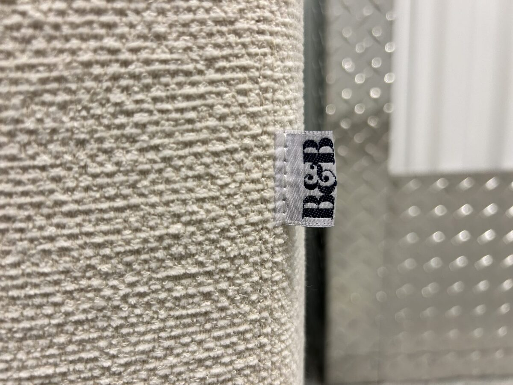
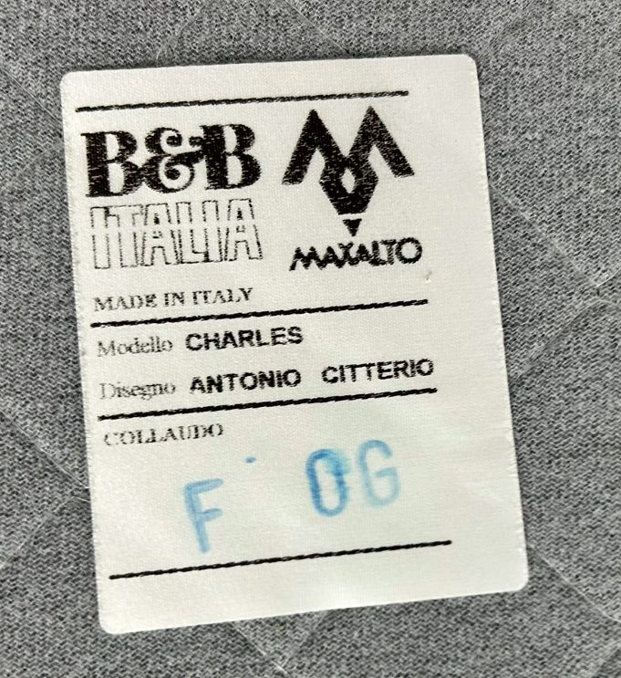
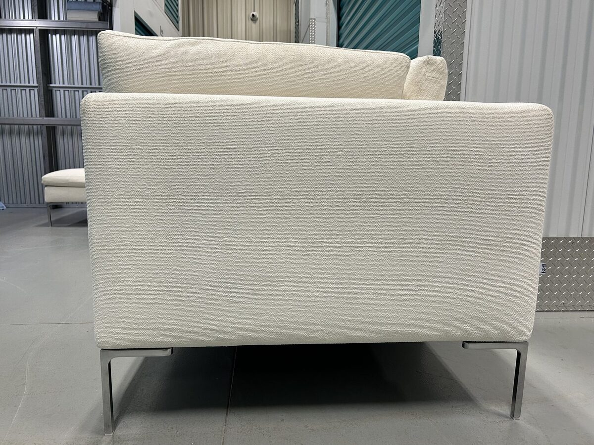
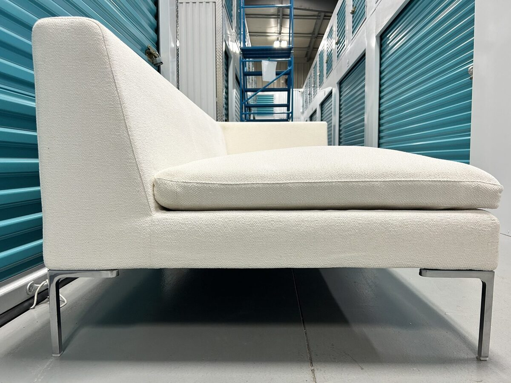
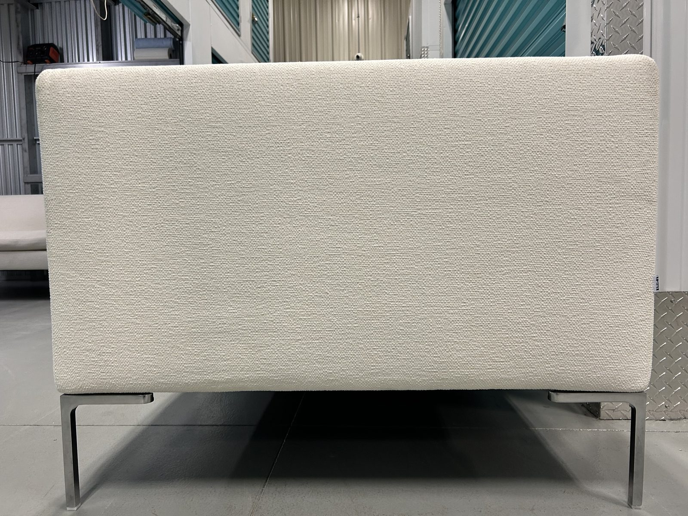
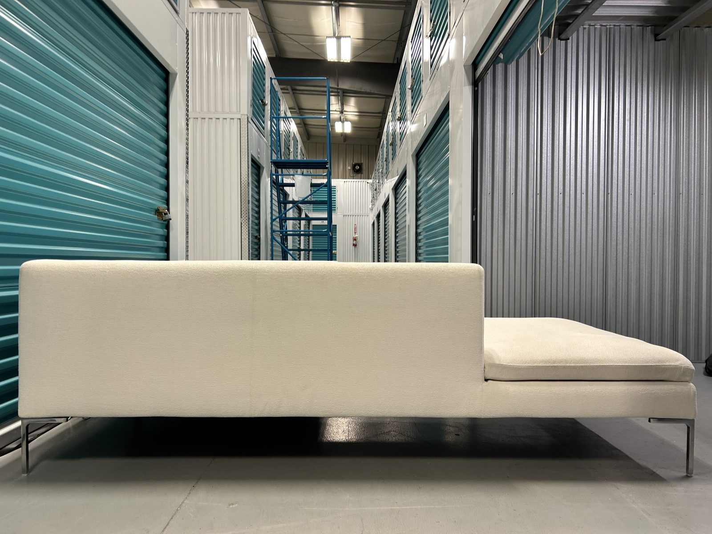
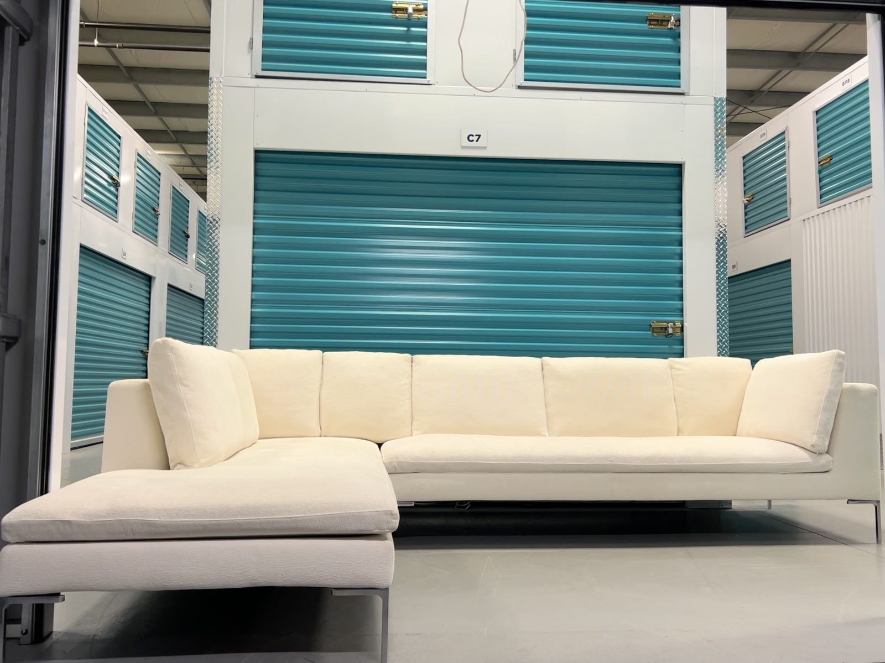
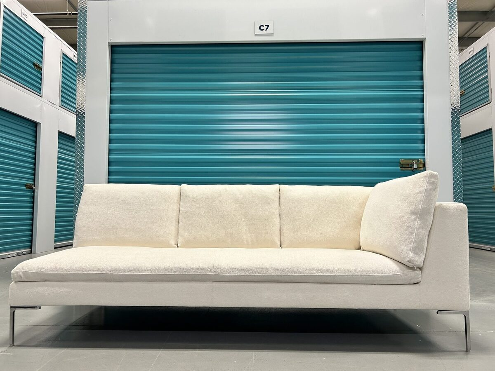
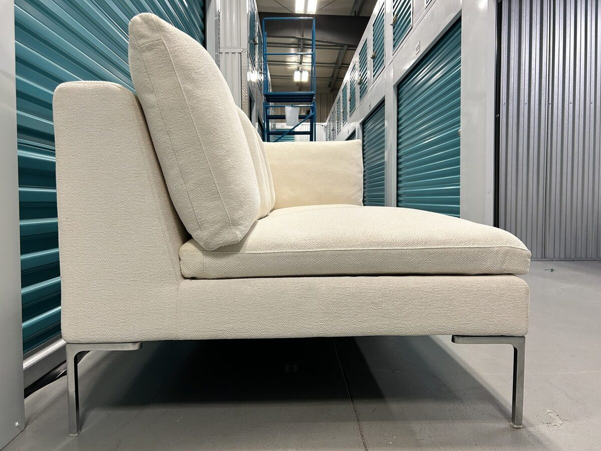
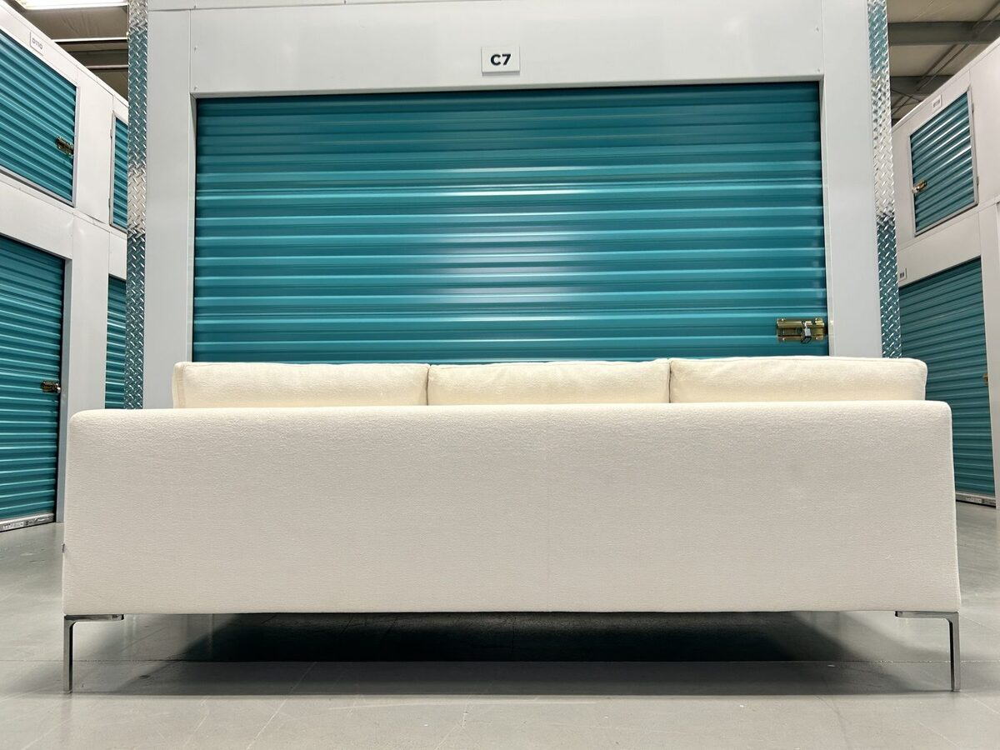
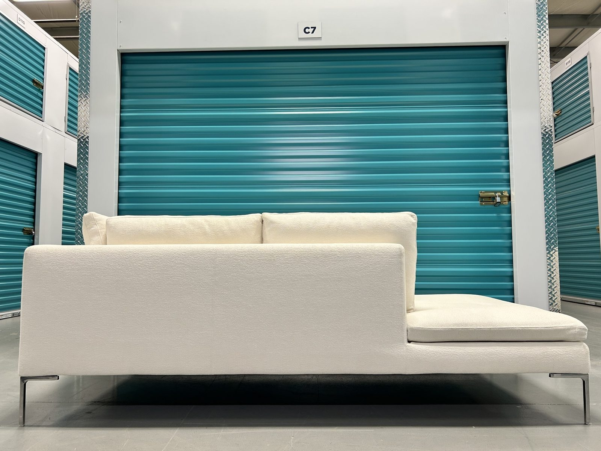
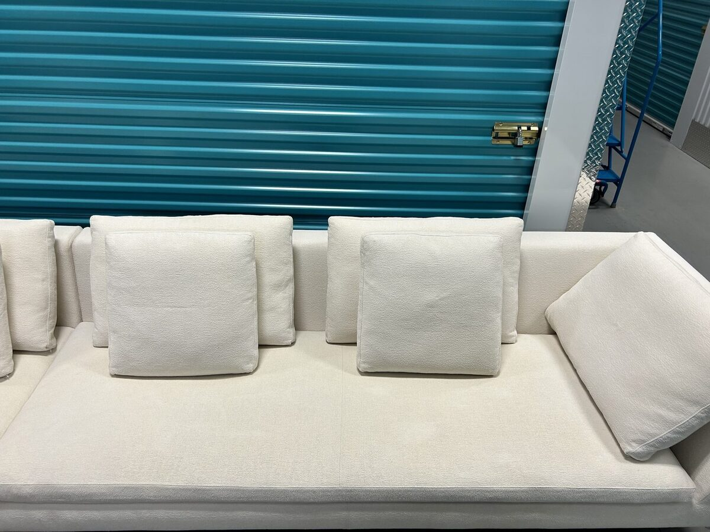
Charles Left-Facing Sectional — Off-White Rattier Fabric
Description
The Charles is one of the most referenced sofas in the history of contemporary Italian design — designed by Antonio Citterio for B&B Italia and in continuous production since its introduction. This is not a piece that trends in and out. It has been a fixture in architecture studios, design publications, and high-end interiors for over two decades for a single reason: it gets everything right. The Charles is defined by its restraint. Low profile, clean geometry, and the signature die-cast aluminium feet — cast in an inverted "L" shape — that give the piece its characteristic floating appearance. The back is composed of free, independently placed cushions rather than fixed bolsters, which allows the silhouette to remain open and architectural while still delivering full support. This configuration is a left-facing L — a sofa body running right with a full chaise extending left. It reads as a complete, room-defining piece from the moment it's placed. The upholstery is B&B Italia's Rattier fabric in off-white — a tightly woven, mid-weight textile with a refined, slightly textured surface. It's warm without being casual, and neutral enough to anchor both contemporary and transitional spaces without competing with anything around it. The removable cover system is a meaningful feature at this tier. It means the piece is serviceable without involving a full upholsterer visit, and it's the reason well-maintained Charles sectionals remain in circulation decades after manufacture. The steel frame underneath doesn't warp, sag, or develop joint deterioration — it either holds or it doesn't, and this one holds.
Features
- Internal frame: tubular steel and steel profiles
- Internal frame upholstery: Bayfit® (Bayer®) flexible cold-shaped polyurethane foam with polyester fibre cover
- Seat cushion upholstery: shaped polyurethane of different densities, sterilized down, polyester fibre cover
- Back cushions: polyester fibre fill, box-style construction
- Feet: die-cast aluminium in inverted "L" profile
- Covers: fully removable via Velcro attachment — can be professionally reupholstered or cleaned off the frame